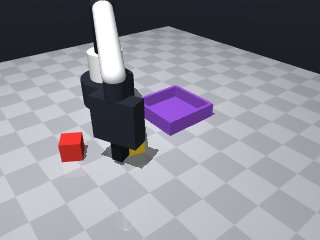
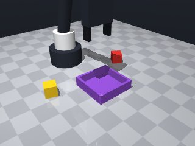
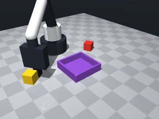
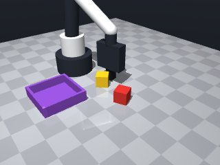
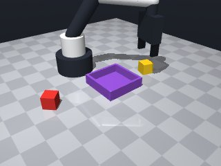
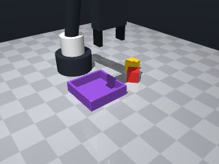

0 demonstrations · reward: gt · perception: real · 8 practice episodes in 1 rounds
Safety layer: 1 halts, 23 clamps.
| role | model | calls | tokens in | tokens out | USD |
|---|---|---|---|---|---|
| coder | nvidia/nemotron-3-super-120b-a12b | 1 | 1,684 | 1,363 | $0.0017 |
| summarizer | nvidia/Nemotron-3_5-Lightning | 0 | 0 | 0 | $0.0000 |
| compute | local | 117 s | $0.0000 | ||
| total | 1 | 1,684 | 1,363 | $0.0017 |
- Start by homing the arm to a known safe pose. - Use perceive‑act‑verify cycle: get the latest pose of the yellow cube before each grasp attempt, align the gripper yaw with the cube's yaw, and approach slowly. - Retry grasping a few times if the grasp fails or if the object is not detected as held. - After a successful grasp, lift the cube to a clear height, then move to the tray centre (obtained from fixtures) and lower to table height (where the cube will sit inside the tray). - Release the cube and verify that the gripper is empty before finishing. - Use modest speeds for precise motions (0.05 m/s) and default speed for longer travels. - Wrap moves that could be out of reach in try/except MotionError to avoid crashing the skill.
--- round_0/skill.py +++ round_1/skill.py @@ -0,0 +1,89 @@ +import math + +def run(robot): + # Helper to attempt a grasp with retries + def attempt_grasp(cube_pose, max_tries=3): + for i in range(max_tries): + # Approach from above, aligning with cube yaw + x, y, z = cube_pose["pos"] + yaw = cube_pose["yaw"] + # Move to a point just above the cube + above_z = z + 0.08 # 8 cm clearance + try: + res = robot.move_to(x, y, above_z, yaw=yaw, speed=0.1) + if not res["ok"]: + continue + # Lower slowly to grasp height (around cube centre) + res = robot.move_to(x, y, z, yaw=yaw, speed=0.05) + if not res["ok"]: + continue + # Close fingers + if robot.grasp(): + # Verify hold + if robot.holding() is not None: + # Lift up + robot.move_to(x, y, above_z, yaw=yaw, speed=0.05) + return True + except Exception as e: # MotionError or others + robot.log("grasp attempt failed:", e) + continue + return False + + # 1. Home + robot.home() + + # 2. Locate yellow cube + obs = robot.observe() + cube_info = obs["objects"].get("yellow_cube") + if cube_info is None: + robot.log("Yellow cube not perceived") + return False + + # 3. Grasp the cube + if not attempt_grasp(cube_info): + robot.log("Failed to grasp yellow cube after retries") + return False + + # 4. Get tray pose (use latest perception) + obs = robot.observe() + tray_info = obs["fixtures"].get("tray") + if tray_info is None: + robot.log("Tray not perceived") + return False + tx, ty, tz = tray_info["pos"] # tz is 0 (table top) + + # 5. Move above tray + try: + res = robot.move_to(tx, ty, tz + 0.12, speed=0.1) # 12 cm above tray + if not res["ok"]: + robot.log("Failed to move above tray") + return False + except Exception as e: + robot.log("Motion error moving above tray:", e) + return False + + # 6. Lower to table height inside tray (cube centre height) + try: + res = robot.move_to(tx, ty, tz + 0.015, speed=0.05) # cube centre height + if not res["ok"]: + robot.log("Failed to lower over tray") + return False + except Exception as e: + robot.log("Motion error lowering over tray:", e) + return False + + # 7. Release + robot.release() + if robot.holding() is not None: + robot.log("Failed to release cube") + return False + + # 8. Retract a bit + try: + robot.move_by(dz=0.08, speed=0.05) + except Exception: + pass + + # 9. Home again (optional) + robot.home() + return True






import math
def run(robot):
# Helper to attempt a grasp with retries
def attempt_grasp(cube_pose, max_tries=3):
for i in range(max_tries):
# Approach from above, aligning with cube yaw
x, y, z = cube_pose["pos"]
yaw = cube_pose["yaw"]
# Move to a point just above the cube
above_z = z + 0.08 # 8 cm clearance
try:
res = robot.move_to(x, y, above_z, yaw=yaw, speed=0.1)
if not res["ok"]:
continue
# Lower slowly to grasp height (around cube centre)
res = robot.move_to(x, y, z, yaw=yaw, speed=0.05)
if not res["ok"]:
continue
# Close fingers
if robot.grasp():
# Verify hold
if robot.holding() is not None:
# Lift up
robot.move_to(x, y, above_z, yaw=yaw, speed=0.05)
return True
except Exception as e: # MotionError or others
robot.log("grasp attempt failed:", e)
continue
return False
# 1. Home
robot.home()
# 2. Locate yellow cube
obs = robot.observe()
cube_info = obs["objects"].get("yellow_cube")
if cube_info is None:
robot.log("Yellow cube not perceived")
return False
# 3. Grasp the cube
if not attempt_grasp(cube_info):
robot.log("Failed to grasp yellow cube after retries")
return False
# 4. Get tray pose (use latest perception)
obs = robot.observe()
tray_info = obs["fixtures"].get("tray")
if tray_info is None:
robot.log("Tray not perceived")
return False
tx, ty, tz = tray_info["pos"] # tz is 0 (table top)
# 5. Move above tray
try:
res = robot.move_to(tx, ty, tz + 0.12, speed=0.1) # 12 cm above tray
if not res["ok"]:
robot.log("Failed to move above tray")
return False
except Exception as e:
robot.log("Motion error moving above tray:", e)
return False
# 6. Lower to table height inside tray (cube centre height)
try:
res = robot.move_to(tx, ty, tz + 0.015, speed=0.05) # cube centre height
if not res["ok"]:
robot.log("Failed to lower over tray")
return False
except Exception as e:
robot.log("Motion error lowering over tray:", e)
return False
# 7. Release
robot.release()
if robot.holding() is not None:
robot.log("Failed to release cube")
return False
# 8. Retract a bit
try:
robot.move_by(dz=0.08, speed=0.05)
except Exception:
pass
# 9. Home again (optional)
robot.home()
return True